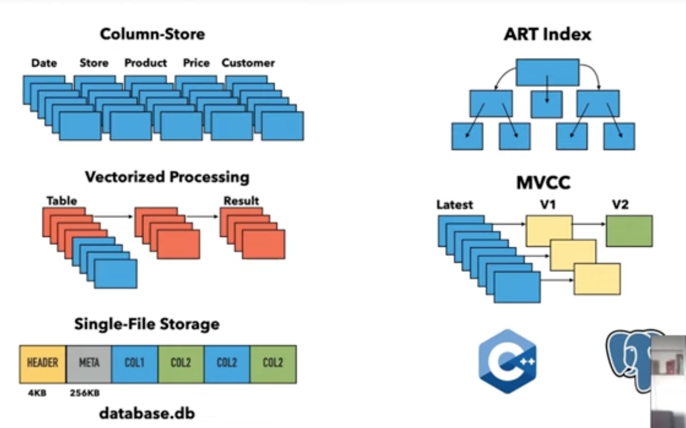
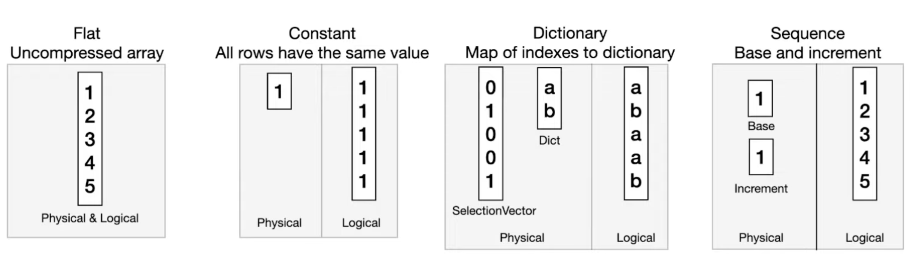
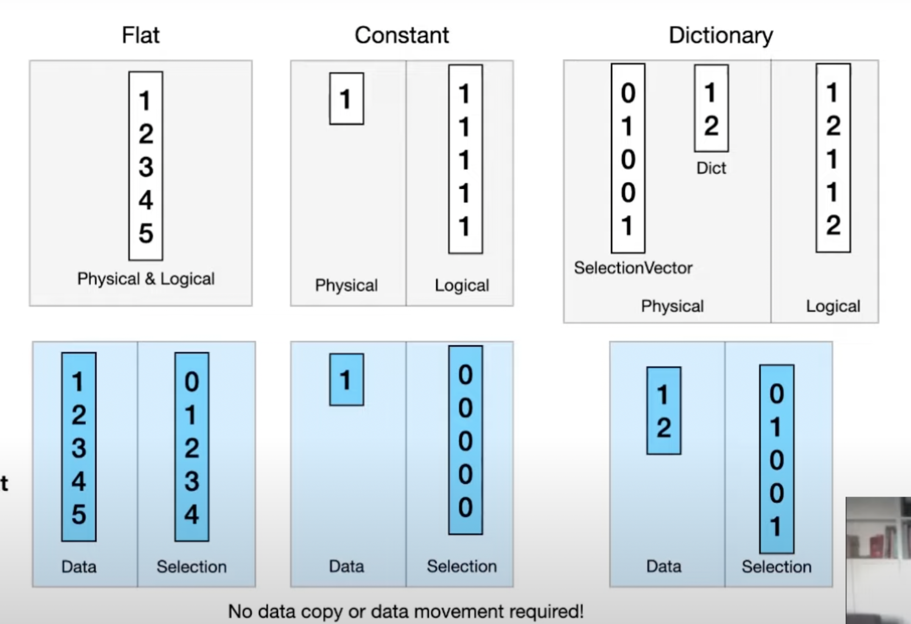
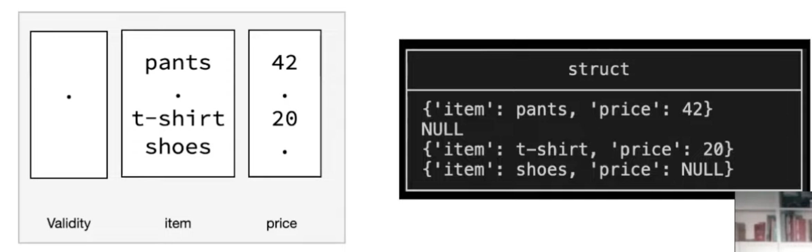
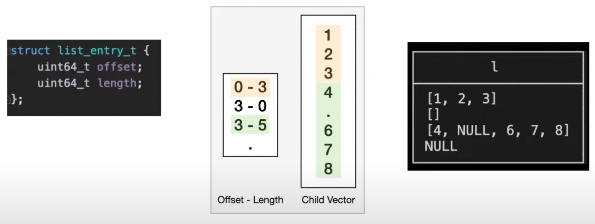
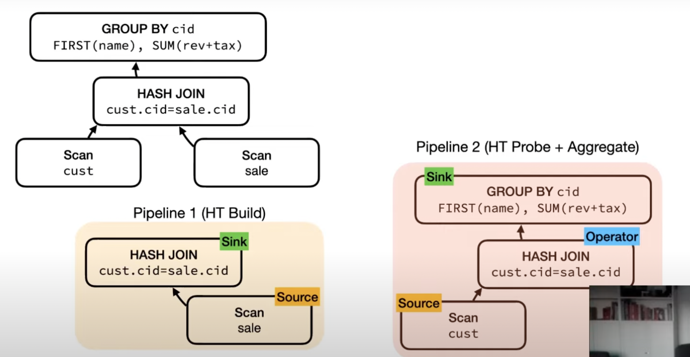

Remarks
The Unified Vector Format was really neat. It’s nice to see the adaptive string format from Umbra being used by DuckDB too.
- In-process OLAP DBMS (SQLite for Analytics)
- Supports querying directly over many formats (like Parquet, CSV, JSON, Arrow, Pandas, SQLite, Postgres)
- Mark is the Co-Founder & CTO along w/ being a major contributor at DuckDB. PhD from CWI.
System Overview

- Written in C++, Uses the pg parser
- Vectorized push-based model (vector at a time for an operator instead of the usual row at a time model)
Vectors
- DuckDB has a custom vector format similar to Arrow
- Focused more on execution. The Arrow format is optimized for other use-cases like streaming over a socket, serialization, on-disk storage etc.
- Co-designed w/ Velox (both DuckDB & Velox have the same vector format)
- For scalar types, vectors are logically arrays.
- Their VectorType physically stores compressed data which can be pushed into the engine & operated on directly without decompressing.
- Some examples: 
- Operations involving different kind of vectors together would need to be handled case by case which would require a lot of code. DuckDB doesn’t use specialized execution for these cases & uses generic operators.
- Flatten: Convert vector into Flat vector (i.e. decompress)
- Downside: need to move/copy data around
- ? Do they actually use this
- ToUnified - Convert vector to unified format
- Unified Format for Applicable Types
- Doesn’t require copying/moving data
- Flatten: Convert vector into Flat vector (i.e. decompress)
- Q/A
- You get a dictionary vector when reading a DuckDB file but does the same happen when reading Parquet files with their dictionary format?
- We emit our dictionary vectors for Parquet too. Some values like NULL parameters in query are also converted to Constant vector if applicable.
- Do you have any idea of how much performance gain on removing the indirection layer when comparing a dictionary w/ 1 element & a constant vector?
- We don’t specialize a lot on dictionary vectors compared to constant vectors since the benefit isn’t always obvious for generic dictionaries compared to a constant vector.
- Do you read data before you choose which representation to store your vectors in?
- Our storage is compatible with vectors but it isn’t exactly that. We do things like bitpacking before storing data. Some of our storage formats are compatible w/ vectors but not all of them translate to different vector types.
- (Clarification) Say a user inserts values like 1, 2, 0 which would be apt for the dictionary format. How would you determine whether to use Flat or Dictionary Vector?
- There’s a compression phase when we write to disk. When reading back from the storage format, we can say that our storage format is dictionary encoded so a Dictionary vector might be the optimal representation for this.
- You get a dictionary vector when reading a DuckDB file but does the same happen when reading Parquet files with their dictionary format?
- Strings
- Same format as Umbra is used.
- Size: 16 bytes (B)
- Short Strings (<= 12 bytes)
length(4B) | string data (4B+8B)- Inlined (instead of storing a ptr to the string)
- Long String
length(4B) | prefix (4B) | offset or ptr(8B)
- Regardless of string length, the first 8 byte contains the size & prefix for the string. This allows faster comparisons.
- Nested Types (eg. structs, list)
- Storing as blobs or string is slow
- Stored recursively using vectors (similar to Arrow)
- Fast & highly efficient processing
- Allows reuse of operators for nested types
- The types are composable i.e. structs can have lists, lists can have structs & so on.
- Structs store their child vectors & a validity mask.
- Lists are stored as combination of offset/lengths & a child vector. The child vector can have a different length.
- Q/A: What happens when data types differ b/w struct fields for different entries?
- We don’t support different datatypes for the same field when using structs. The schema for a struct is fixed. There’s a Map type (key-pair values) which is stored as a list of structs which can be used instead.
- Q/A: Can the struct contain itself as a child type?
- No. Not supported.
Query Execution
- Pull-Based Model (Vector Volcano) (initial, not used now)
- Every operator implements GetChunk.
- Query starts by calling GetChunk on the root.
- Nodes recursively call GetChunk on the children.
- Geared towards single threaded execution
- Parallelism Model
- https://youtu.be/bZOvAKGkzpQ?si=cgTGLEY35DqLwrSC&t=1937
- Adding multi-threading to a Volcano-based system
- Exchange Operator
- Individual operators don’t need to be parallelism aware
- The optimizers splits the query plan into multiple partitions which are executed independently
- Eg: HashTable being built over different ranges for a table & then joined by the exchange operator
- Note for Self: See https://15445.courses.cs.cmu.edu/fall2022/slides/13-queryexecution2.pdf for more details
- Issues
- Plan explosion (lots of plan due to splitting & re-joining, DBMSs often do quadratic or even exponential order operations with plans)
- Load imbalance issues (all partitions may not have the same load & lead to uneven distribution across threads)
- Added materialization cost (communication b/w operators require materializing rows since the operators are parallelism unaware)
- Morsel driven parallelism
- Individual operators are parallelism-aware
- Eg: Hash Join knows how to obtain input in parallel. Same for Scan operator.
- Parallelism isn’t integrated into the query plan
- Morsel drive parallelism was hard to integrate into a pull-based model where everything is entangled together. So, folks at DuckDB switched to a push-based model.
- Paper: Morsel-Driven Parallelism: A NUMA-Aware Query Evaluation Framework for the Many-Core Age
- Individual operators are parallelism-aware
- Exchange Operator
- Push-based Model
- Separate interfaces for sink, source & operator.
- Source & sink are parallelism aware.
- Source
void GetData(DataChunk &chunk, GlobalSourceState &gstate, LocalSourceState &lstate)
- Operator
OperatorResulttype Execute(DataChunk &input, DataChunk &chunk, OperatorState &state)
- Sink
void Sink(GlobalSinkState &gstate, LocalSinkState &lstate, DataChunk &input)void Combine(GlobalSinkState &gstate, LocalSinkState &lstate)void Finalize(GlobalSinkState &gstate)
- 
- The Hash Join on the right side doesn’t need to be parallelism aware since it’s just going to probe the HashTable built by the HashJoin on left.
- In pull-based flow, control flow lives inside the operator which allows for great flexibility (eg. can call child, decide to get more data or not etc.) but that level of flexibility wasn’t needed in DuckDB. Call stack holds all state since everything is built on recursive calls.
- In push-based flow, control flow happens in a central location. State is stored explicitly in a central location. This also enables optimizations like
- Vector Cache: add small caches b/w operators
- Scan Sharing: push results of 1 scan into multiple sinks (can be done in a pull-based system but easier to implement in a push-based one)
- Q/A: What happens if the different sinks consuming from the Scan operate at different rates?
- Currently Sinks are blocking in the sense that they are executed one after the other. If we were doing async IO then we’d need to apply back-pressure somehow.
- Execution of a pipeline can be paused since state is stored centrally.
- Eg: If you’re pushing data into a sink & that sink has fixed sized buffer, if the buffer is full, you can interrupt the pipeline.
- Similarly, you need to be able to pause your pipeline if you were doing async IO so that the pipeline waits for the IO to be done.
- Hard to do this in a pull-based model.
- Q/A: Could you have synchronization bottlenecks if you’ve parallel queries? What about the global state? Can that become a bottleneck?
- Depends on the operators you’re using. Could definitely happen if you’ve things that do socket connections etc. Usually the only socket connections we’ve are on our sources because we don’t have a client consuming this over a socket.
- The global state is where the communication b/w threads happen & it can definitely become a bottleneck.
Table Storage
- Single-file block-based storage format
- WAL is stored separately
- File Strcuture
Info (4K) | HeaderOne (4K) | HeaderTwo(4K) | Block (BLOCK_SIZE) | ...- Blocks are all the same fixed size: 256KB
- Support for ACID using headers. How?? Didn’t get his explanation.
- Tables are partitioned into row groups.
- Each row group has 120K~ rows.
- Row groups are the parallelism & checkpoint unit.
- Compression works very well w/ columnar storage.
- General purpose, heavyweight compression
- Finds patterns in bits
- Eg: gzip, zstd, snappy, lz4
- Simple to apply
- Higher decompression speed slows down execution
- Need to decompress in bulk - no random seeks or compressed execution
- Special purpose, lightweight compression
- Find specific patterns in data
- Eg: RLE, bitpacking, dictionary
- Faster than general purpose compression
- Downside: No effect if the patterns aren’t there. So multiple algorithms need to be used.
- Patterns can be exploited during execution
- General purpose, heavyweight compression
- Compression works per-column per row-group
- Phase 1 : Analyze: Figure out which compression method(s) are best
- Phase 2 : Compress
Lightning Round : Misc Topics
- Buffer Manager
- Custom lock-free buffer manager
- Inspired by lean-store
- Doesn’t use LRU since it needs a centralized data structure but similar to it
- Granularity: 256KB
- Custom lock-free buffer manager
- Out-Of-Core
- Supports larger than memory execution using a streaming engine.
- Special join, sort & window algorithms.
- Goal: Gracefully degrade performance.
- Traditionally, systems just switch over to the slow path (for on disk) once things don’t fit in-memory.
- DuckDB tries to use as much memory as possible & tries to write as little to disk as possible.
- See Paper: Efficient External Sorting in DuckDB
- Supports larger than memory execution using a streaming engine.
- Transactions
- ACID txns.
- Based on Hyper MVCC model
- Optimized for vectorized processing
- Supports Snapshot Isolation
- Optimistic concurrency control
- Changes to the same rows -> txn. abort
- Paper: Fast Serializable Multi-Version Concurrency Control for Main-Memory Database Systems
- Pluggable File System + HTTP/Object Store Reads
- Can be used for querying S3, other files online directly
Q/A
- Does query cancellation work in DuckDB? For eg: Can you stop an ongoing hash table build?
- Query cancellation is supported. Control is returned to the central location from the operator which can cancel the query.
- Is compaction done in DuckDB? If a version isn’t used, it it removed? There were users reporting that even after deleting certain tables, the file size wasn’t reduced.
- We don’t do compaction yet. We do re-use the blocks (which are marked free whenever a row group is destroyed)
- MVCC is only done in-memory. We don’t write it out to storage like Postgres or other DBs. Once the system shuts down, the txns are cancelled anyway.
- Is checkpointing done in background (periodically) or when the WAL gets full?
- We checkpoint when the WAL crosses a specific threshold.
- We also do optimistic writing. If you’re loading a lot of data, we won’t write to the WAL, we just directly write to the DB file & directly compress stuff which speeds things up.
- What do you think is the role of UDF in DuckDB?
- We’re working on implementing UDFs in Python right now. We’ve some Javascript UDFs. We’ll probably implement WASM UDFs as well. You can also build extensions to implement UDFs in DuckDB.
- UDFs are less important in DuckDB compared to Postgres since pulling data out is so fast. Things you’d need a UDF for in Postgres, you can just do by getting the data out of DuckDB.
- Is the query optimizer top-down or bottom-up?
- We’ve different query optimizers. We’ve a mix of rule & cost based optimizer but it’s currently in a messy state.
- How do you keep track of resources?
- For threads, we’ve our own threadpool. We allow users to use their thread-pool or integrate w/ ours.
- For memory, the buffer manager has fixed memory & unpins pages (if possible) when that memory limit is exceeded.
Appendix
- https://duckdb.org/
- https://github.com/duckdb/duckdb
- Slides for the talk: https://15721.courses.cs.cmu.edu/spring2023/slides/22-duckdb.pdf
- Initial Paper: https://mytherin.github.io/papers/2019-duckdbdemo.pdf
- Older Talk (2020): https://www.youtube.com/watch?v=PFUZlNQIndo